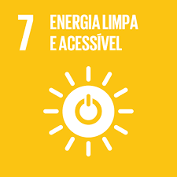

Nós da PWN, somos preocupados com o ambiente de trabalho, nossos funcionários e com o meio ambiente. E como fazemos para que isso dê certo?
Ambiente de trabalho
Nosso ambiente de trabalho, é construído pensando no conforto de nossos funcionários,
Por conta disso, cada funcionário tem um computador com ótimas configurações,
para que não passe estresse, enquanto trabalha, Mesas espaçosas e cadeiras gamers, para que se sinta confortável
durante o dia a dia.
O funcionário tem direito a uma hora e meia de almoço, e ele pode aproveitar esse tempo comendo em nosso
refeitório,
ou jogando vídeo game, baralho, sinuca, pebolim, assistindo tv, filmes e séries ou até mesmo lendo um livro,
e isso é possível, pois temos sala de jogos, sala de leitura, área de socialização etc.
Veja algumas fotos:
Sala de inovação
A sala de inovação é um local onde nossos Onde nossos desenvolvedores podem descansar e pensar em todo o processo criativo, com toda a comodidade que podemos oferecer.
Sala de reunião
Nossa sala de reunião, foge um pouco do convencional, pois ao invés de mesas e cadeiras, optamos por um sofá grande.

Escritórios
Nossos escritórios, são projetados pensando no conforto do funcionário, e com isso disponibilizamos mesas individuais e cadeira gamer, para cada um.
Sala de jogos
A sala de jogos é um local, onde os funcionários poderão descasar durante o almoço, ou no final do expediente.

Meio ambiente
Nossa empresa se preocupa com o meio ambiente e estamos comprometidos com as ODS 2030 da ONU,
e algumas delas são:
4- Até 2030, garantir que todos as meninas e meninos tenham acesso a um desenvolvimento de qualidade na
primeira infância, cuidados e educação pré-escolar, de modo que eles estejam prontos para o ensino primário
Saiba mais:
7- Até 2030, aumentar substancialmente a participação de energias renováveis na matriz energética global.

9- Desenvolver infraestrutura de qualidade, confiável, sustentável e resiliente, incluindo infraestrutura
regional e transfronteiriça, para apoiar o desenvolvimento econômico e o bem-estar humano,
com foco no acesso equitativo e a preços acessíveis para todos